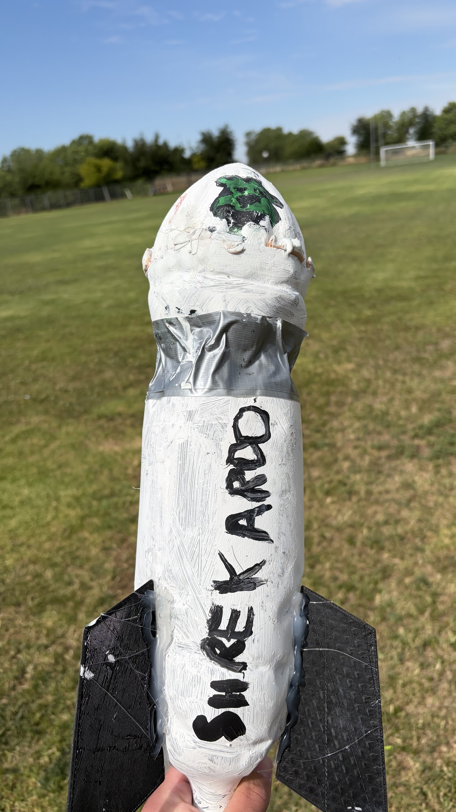
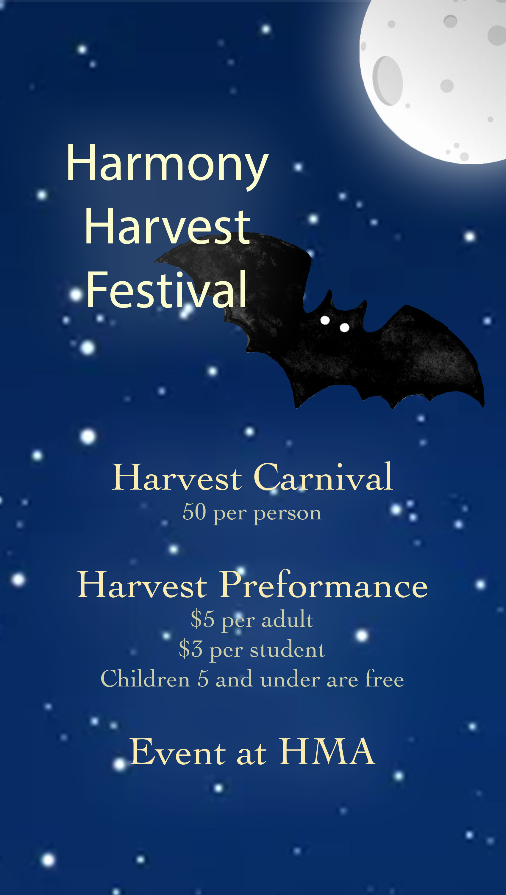
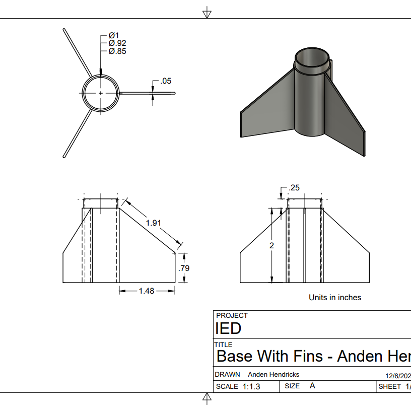
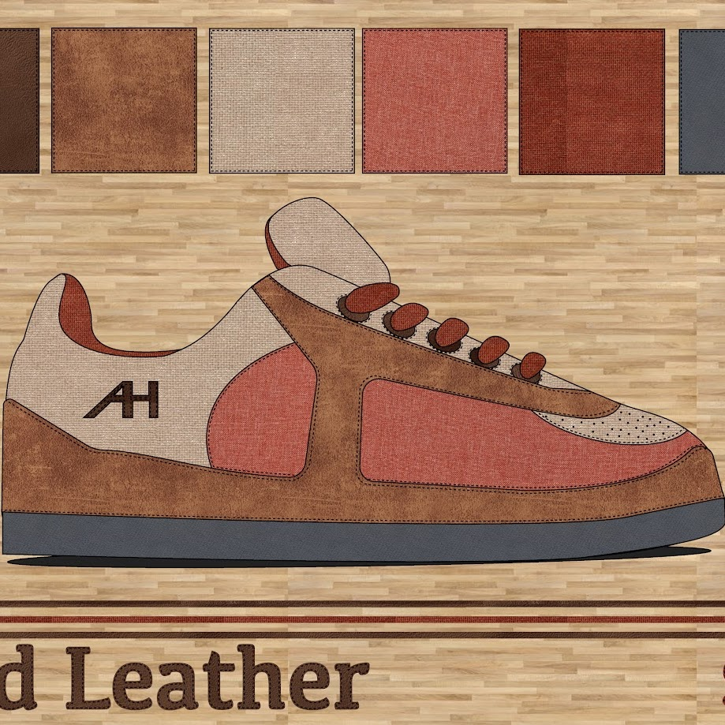

Critical Thinking & Problem Solving

Project BASVRO
During project BASVRO, I learned crucial problem-solving skills. My partner and I had to build a rocket from a 2-liter bottle and launch it as far as we could. Before we built the rocket, we learned how to run controlled tests to determine the optimal baking soda-to-vinegar ratio that would produce the most thrust. This helped build problem-solving skills so I can run tests on my own for future projects.
Cultural Awareness & the Ability to Collaborate With Diverse Groups
Project Title
Students will enter a two- to three-sentence description of their evidence of meeting this graduate outcome.
Technical Skills in Digital Media Applications and Information Management

Harvest Festival Poster
While creating a poster for Harmony's annual Harvest Festival, I learned how to use Adobe Photoshop, a program used by many large and small businesses to make graphics. I learned how to apply text effects and create image masks. My poster didn't win, but it was a great learning experience for me, and maybe one of my future posters will win.
Effective Communication Skills of Listening, Speaking, and Writing

IED Rocket Project
During the rocket project, my partner and I had to design parts for a rocket. We both learned how to use a program called Fusion 360, where we designed parts for our rocket. Later, we 3D-printed the parts and assembled the rocket so that we could launch it.
Adaptability, Responsibility, and Ethical Behaviors
Project Title
Students will enter a two- to three-sentence description of their evidence of meeting this graduate outcome.
Creativity and Innovation

Shoe Design
While making my shoe in graphic design, I learned how to creatively express myself and turn my ideas into something, like a shoe design. We started with a piece of paper to sketch our ideas and then decided which one we liked best. After that, we made the final design on the computer and wrote an artist statement about it.
Leadership, Self-Management, and Organizational Skills Obtained Through Real-World Applications and Community Involvement
Project Title
Students will enter a two- to three-sentence description of their evidence of meeting this graduate outcome.
The Ability to Navigate the Global World of Work and Further Your Education
Project Title
Students will enter a two- to three-sentence description of their evidence of meeting this graduate outcome.